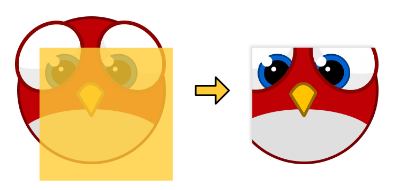

var sprite:Sprite = createSprite();
var mask:Quad = new Quad(100, 100);
mask.x = mask.y = 50;
sprite.mask = mask; // ← use the quad as a maskMasks
Masks can be used to cut away parts of a display object. Think of a mask as a "hole" through which you can look at the contents of another display object. That hole can have an arbitrary shape.
If you’ve used the "mask" property of the classic display list, you’ll feel right at home with this feature. Just assign a display object to the new mask property, as shown below. Any display object can act as a mask, and it may or may not be part of the display list.
This will yield the following result:

Figure 1. Using a rectangular mask.
The logic behind masks is simple: a pixel of a masked object will only be drawn if it is within the mask’s polygons. This is crucial: the shape of the mask is defined by its polygons — not its texture! Thus, such a mask is purely binary: a pixel is either visible, or it is not.
|
Masks and Stage3D
For masks to work in Stage3D, you will need to activate the depth and stencil buffers in the Lime project.xml configuration file.
Add the following setting to the But don’t worry, Starling will print a warning to the console if you forget to do so. |
Canvas and Polygon
"This mask feature looks really nice", you might say, "but how the heck am I going to create those arbitrary shapes you were talking about?!" Well, I’m glad you ask!
Indeed: since masks rely purely on geometry, not on any textures, you need a way to draw your mask-shapes. In a funny coincidence, there are actually two classes that can help you with exactly this task: Canvas and Polygon. They go hand-in-hand with stencil masks.
The API of the Canvas class is similar to OpenFL’s Graphics object. This will e.g. draw a red circle:
var canvas:Canvas = new Canvas();
canvas.beginFill(0xff0000);
canvas.drawCircle(0, 0, 120);
canvas.endFill();There are also methods to draw an ellipse, a rectangle or an arbitrary polygon.
| Other than those basic methods, the Canvas class is rather limited; don’t expect a full-blown alternative to the Graphics class just yet. This might change in a future release, though! |
That brings us to the Polygon class.
A Polygon (package starling.geom) describes a closed shape defined by a number of straight line segments.
It’s a spiritual successor of OpenFL’s Rectangle class, but supporting (mostly) arbitrary shapes.
Since Canvas contains direct support for polygon objects, it’s the ideal companion of Polygon. This pair of classes will solve all your mask-related needs.
var polygon:Polygon = new Polygon(); (1)
polygon.addVertices(0,0, 100,0, 0,100);
var canvas:Canvas = new Canvas();
canvas.beginFill(0xff0000);
canvas.drawPolygon(polygon); (2)
canvas.endFill();| 1 | This polygon describes a triangle. |
| 2 | Draw the triangle to a canvas. |
There are a few more things about masks I want to note:
- Visibility
-
The mask itself is never visible. You always only see it indirectly via its effect on the masked display object.
- Positioning
-
If the mask is not part of the display list (i.e. it has no parent), it will be drawn in the local coordinate system of the masked object: if you move the object, the mask will follow. If the mask is part of the display list, its location will be calculated just as usual. Depending on the situation, you might prefer one or the other behavior.
- Stencil Buffer
-
Behind the scenes, masks use the stencil buffer of the GPU, making them very lightweight and fast. One mask requires two draw calls: one to draw the mask into the stencil buffer and one to remove it when all the masked content has been rendered.
- Scissor Rectangle
-
If the mask is an untextured Quad parallel to the stage axes, Starling can optimize its rendering. Instead of the stencil buffer, it will then use the scissor rectangle — sparing you one draw call.
- Texture Masks
-
If a simple vector shape just doesn’t cut it, there is an extension that allows you to use the alpha channel of a texture as a stencil mask. It’s called Texture Mask.